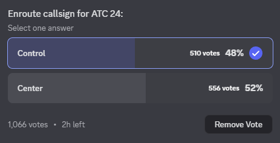

Controlling the Callsign | Live Updates 📉
⏰ With only 3 hours left in the vote, an early victory may be in store for Center ⏰
Over 1000 people have now voted, with 556 voting for Center as their callsign of choice, pulling it 46 votes ahead of Control! 📊
Is there a last-minute plot twist getting ready, or is this the future of ATC24?
Stay tuned for more!
Source: ATC24 Announcements
Author: EzyDubbs